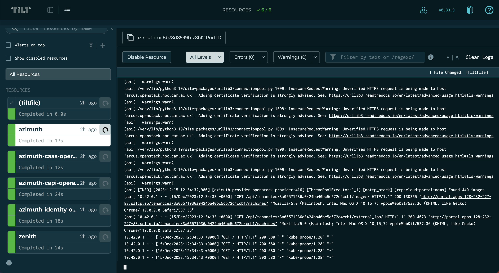

Developing Azimuth
An Azimuth deployment consists of several interdependent components, some of which are Azimuth-specific and some of which are third-party components. Plugging code under development into such a system can be tricky, making development difficult and slow.
Developing Azimuth components
Azimuth has a number of components, mostly written in Python:
- Azimuth API and UI - user-facing API and UI
- Azimuth CaaS operator - Kubernetes operator implementing CaaS functionality
- Azimuth CAPI operator - Kubernetes operator implementing Kubernetes and Kubernetes App functionality
- Azimuth identity operator - Kubernetes operator implementing platform identity
- Zenith - secure, tunnelling application proxy used to expose platform services
- Cluster API addon provider - addons for Cluster API clusters
- Cluster API janitor for OpenStack - resource cleanup for Cluster API clusters on OpenStack clouds
It is useful to develop these components in the context of a running Azimuth installation, as they have dependencies on each other.
To enable this, Azimuth uses Tilt to provide a developer environment where code under development is automatically built and injected into a live system that you can interact with. Tilt provides a dashboard that can be used to drill down into build failures and the logs of the components under development.

Prerequisites
In order to use Tilt to develop Azimuth, the following tools must be available on your development machine (in addition to those required to install Azimuth itself):
- The Tilt CLI
- A
dockercommand, e.g. Docker Desktop - The kubectl command
- The Helm CLI
For developing the Azimuth UI, the following are also required:
- node.js
- The Yarn Classic package manager
Deploying a dev instance
To use Tilt for developing Azimuth components, you first need a running Azimuth instance.
Each developer should have their own independent instance of Azimuth as Tilt will make changes to the running Azimuth components, based on the code under development, that may disrupt or break things for others.
Tip
A single node deployment, e.g. a demo deployment, is sufficient for developing the Azimuth components.
You may wish to maintain a development environment containing site-specific customisations.
The following instructions assume that your Azimuth configuration contains a developer environment
called dev. It is assumed that you have your Azimuth configuration checked out and that you have
an application credential
for the target cloud.
To stand up your developer-specific Azimuth instance, using the dev environment, use the
following:
# Set OpenStack configuration variables
export OS_CLOUD=openstack
export OS_CLIENT_CONFIG_FILE=/path/to/clouds.yaml
# Activate the dev config environment with a specific instance name
#
# This means that resources created for the instance will not collide
# with other deployments that use the dev environment
source ./bin/activate dev jbloggs-dev
# Install Azimuth as usual
ansible-galaxy install -f -r requirements.yml
ansible-playbook stackhpc.azimuth_ops.provision
Configuring a container registry
Azimuth's Tilt configuration looks for a file called tilt-settings.yaml that defines settings
for the development environment. This file is specific to you and should not be added to version
control (it is specified in .gitignore).
In order to get the code under development into your running Azimuth instance, Tilt must have access to a container registry that is accessible to both your development machine and the Azimuth instance. In response to code changes, Tilt will automatically build and push images to this registry and then configure the Azimuth instance to use them.
To configure the prefix for images built by Tilt, use the following setting:
# Images will be pushed to:
# ghcr.io/jbloggs/azimuth-api
# ghcr.io/jbloggs/azimuth-ui
# ghcr.io/jbloggs/azimuth-caas-operator
# ...
image_prefix: ghcr.io/jbloggs
Tip
A good candidate for this is to use GitHub Packages with your user account, as in the example above. This means that development builds do not require access to or clutter up the production repositories.
When using GitHub Packages, the repositories that are created by Tilt when it builds images for the first time will be private. You must log into GitHub and make them public before your Azimuth instance can use them. Until you do this, you will see image pull errors in the Tilt interface.
Using the Tilt environment
Tilt will look for checkouts of Azimuth components as siblings of your Azimuth configuration and include them in your development environment. For example, the following directory structure will result in a development environment where changes to the Azimuth API, UI and CaaS operators are built and pushed into your development Azimuth instance for testing:
.
├── azimuth
│ ├── api
│ ├── chart
│ ├── ui
│ └── ...
├── azimuth-caas-operator
│ ├── Dockerfile
│ ├── azimuth_caas_operator
│ ├── charts
│ └── ...
└── myorg-azimuth-config
├── Tiltfile
├── bin
├── environments
├── tilt-settings.yaml
└── ...
If you wish to prevent a particular component being included in your development environment,
even if the checkout exists as a sibling, you can configure this using the enabled flag for
the component in tilt-settings.yaml. For example, the following would prevent the CaaS
operator from being included in the development environment, even with the directory structure
above:
Once you have checked out all of the components that you want to develop, you can start the development environment using:
This will configure Tilt to connect to your Azimuth instance and begin watching your local checkouts for changes. When a change is detected, Tilt will build and push an image for the component before reconfiguring the Helm release for the component to point to the new image. Once this process is complete, you can interact with your changes using the Azimuth UI for your instance.
Tip
Press the space bar to launch the Tilt user interface.
When the tilt-up command is terminated, all of the Helm releases for the components that
were under development are rolled back to the version that was running before the command
was started.
Local UI development
Because of how the user interface is optimised for production, the container image build for the Azimuth UI is very slow even for a minor change. Because of this, the usual Tilt flow of build/push/deploy is not suitable for UI development.
To improve the feedback cycle for UI development, the Azimuth Tilt environment also builds and runs the Azimuth UI locally using the webpack DevServer. The UI communicates with the Azimuth API on your Azimuth dev instance using a forwarded port (this is necessary in order for the cookie-based authentication to work properly).
The local version of the UI is available at http://localhost:3000.
Note
The UI container image is still built, pushed and deployed in the background. However changes made to the JS files will be visible in the local version much faster.
Created: March 15, 2024